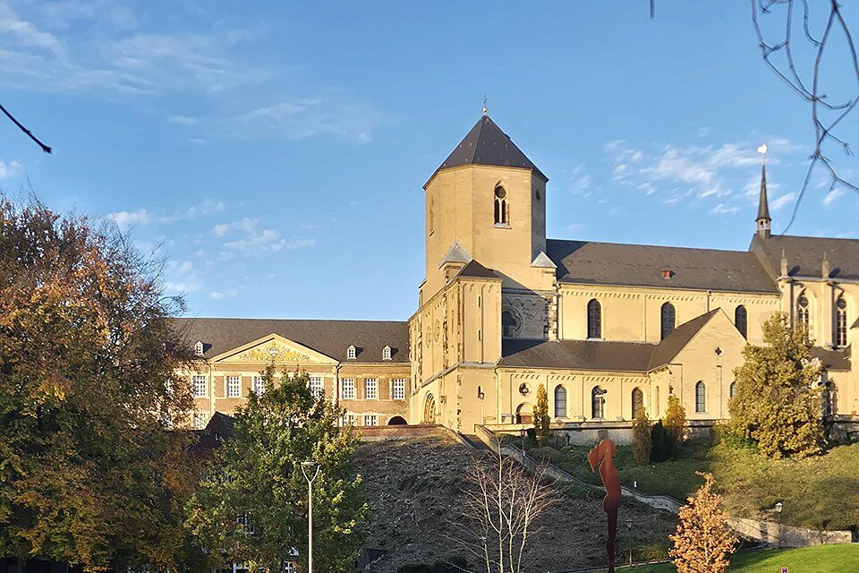

Kfz-Gutachter für Viersen, Neuss und Kaarst
Cihan Es besichtigt Ihr Auto dort, wo es steht: zu Hause, beim Arbeitgeber oder in der Werkstatt Ihrer Wahl, ebenso in Willich, Korschenbroich und Grevenbroich.
02161 688 86 91Mo bis Fr 8 bis 18 Uhr, Sa 9 bis 14 Uhr
Wo besichtigt wird
- Zu Hause
- Das Fahrzeug steht vor der Tür oder in der Garage. Halten Sie Fahrzeugschein und Schlüssel bereit.
- Beim Arbeitgeber
- Die Besichtigung ist auch auf dem Firmenparkplatz möglich. Klären Sie vorher, ob das Gelände zugänglich ist.
- In der Werkstatt Ihrer Wahl
- Steht Ihr Auto schon in einer Werkstatt, notieren Sie den Standort und wer dort Zugang zum Fahrzeug hat. So lässt sich beim ersten Gespräch klären, ob die Werkstatt einen Termin abstimmen muss.
- Das Auto fährt nicht mehr
- Besichtigt wird am Abstellort. Steht es beim Abschleppdienst, kostet jeder Tag Standgeld. Lassen Sie es zügig besichtigen oder umstellen.
Diese Orte gehören zum Einsatzgebiet
Kreis Viersen
- Viersen
- Willich
Rhein-Kreis Neuss
- Korschenbroich
- Kaarst
- Neuss
- Grevenbroich
Mönchengladbach
- Mönchengladbach
- Rheydt
- Wickrath
- Odenkirchen
- Giesenkirchen
- Rheindahlen
- Neuwerk

Ihr Ort steht nicht in der Liste? Fragen Sie am Telefon nach. Fahrtkosten gehören zu den Nebenkosten eines Gutachtens; mehr dazu unter Honorar.
Wann die Hebebühne an der Karstraße 25 sinnvoll ist
Auf der Hebebühne zeigen sich Schäden an Unterboden, Achsen und Fahrwerk, die man am stehenden Auto nicht sieht. Sinnvoll ist sie, wenn Ihr Auto noch fahrbereit ist und der Anstoß Räder, Achsen oder Unterboden getroffen haben könnte.
Die Hebebühne steht in einer eigenständigen Werkstatt an der Karstraße 25, 41068 Mönchengladbach. Reparieren lassen Sie, wo Sie wollen.
Anfahrt zur Karstraße 25